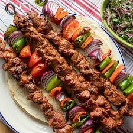

Homepage
Kebab Recipe

Discover the perfect homemade kebab recipe with juicy, flavorful meat and aromatic spices.
Whether grilled, pan-fried, or baked, these kebabs are easy to make and perfect for any occasion.
Serve them with fresh veggies, dips, or warm pita for a delicious meal!
Ingridients
- 500g ground beef or lamb (or a mix of both)
- 1 small onion, finely grated
- 2 cloves garlic, minced
- 2 tbsp fresh parsley, chopped
- 1 tsp ground cumin
- 1 tsp ground coriander
- 1 tsp smoked paprika
- ½ tsp ground cinnamon (optional, for extra warmth)
- ½ tsp chili powder (optional, for heat)
- 1 tsp salt
- ½ tsp black pepper
- 1 tbsp olive oil
- 1 tbsp lemon juice
- Wooden or metal skewers (if making skewered kebabs)
How to Cook
- Prepare the Ingredients – Finely grate the onion, mince the garlic, and chop the parsley.
- Mix the Meat and Spices – In a large bowl, combine ground meat with onion, garlic, parsley, cumin, coriander, paprika, cinnamon (if using), chili powder, salt, and black pepper. Add olive oil and lemon juice for extra moisture and flavor.
- Knead the Mixture – Mix everything well using your hands until fully combined. Knead for about 3-5 minutes to help the mixture hold together.
- Shape the Kebabs – If using skewers, divide the mixture into equal portions and mold them around the skewers. If making patties, shape them into small oval or round forms.
- Chill (Optional) – Let the kebabs rest in the refrigerator for 20-30 minutes to help them firm up and hold their shape while cooking.
- Cook the Kebabs – Choose your preferred cooking method:
- Grill: Preheat the grill to medium-high heat and cook kebabs for 10-12 minutes, turning occasionally.
- Pan-Fry: Heat a little oil in a pan and cook for about 4-5 minutes per side until browned and cooked through.
- Oven: Preheat the oven to 200°C (400°F) and bake for 15-20 minutes, flipping halfway.
- Serve and Enjoy – Serve hot with pita bread, rice, salad, or a side of yogurt sauce. Enjoy your homemade kebabs!